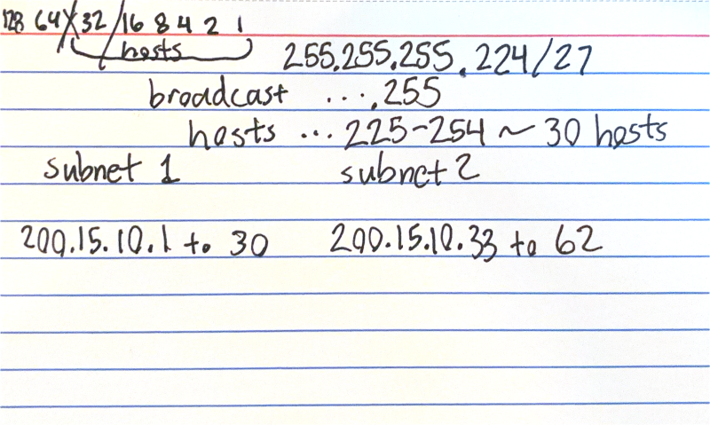

IPv4 Subnetting & Network Planning CLI (Python)

Why I built this
I'm studying for the CCNA, and Subnetting is a HUGE part of the exam. Knowing how to figure out network boundaries, valid host ranges, and broadcast/network addresses is essential if you want to pass. With this project, I put the formulas for those calculations into code so that I can run this script anytime to double check my work. It's also a proof-of-concept for my ability to write Python scripts and my understanding of subnetting math.

What I built
I developed a command-line utility in Python that displays the network topology details for a given IPv4 address and CIDR notation. The script returns:
- Detected IP Class (A-E or classless)
- The Subnet Mask in dotted decimal format (e.g.,
255.255.255.192). - The Network Address and Broadcast Address.
- The usable IP range for hosts, and total number of available hosts.
- The number of available subnets given the class.
It acts as a lightweight, fast capacity planning tool that can be run from any terminal, which is exactly the kind of automation script a systems administrator would use on a daily basis.
How I did it
The easy way to build this in Python would be to just import the built-in ipaddress module, which does all
the heavy lifting automatically. However, since the goal was to learn, I intentionally chose not to use it.
Instead, I built the logic from scratch using bitwise operations. At a high level, it's similar to how I do the math by hand.
The source code is available on GitHub.
What I learned
This project solidified my understanding of IPv4 architecture. Using bitwise logic to calculate the network and broadcast addresses helped me understand how subnet masks actually work at a low-level.
<< Back to Projects